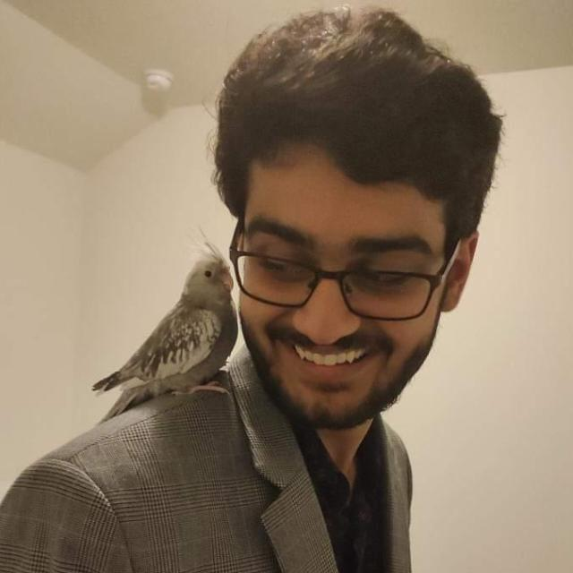

I have always had a strong passion for tech and a love to create and build things. My interest in the field of software development truly became apparent after I had written my very first program in the Java language, which was a simple tic tac toe game that ran on the terminal. Despite its simplistic use case it took me hours of researching, debugging, and learning to complete, and despite the challenges I enjoyed every moment of the development process, and became truly fascinated with the world of software engineering. I have since acquired my associates degree of computer science from Houston Community College, and am now currently in progress of acquiring my bachelors degree in computer science from the University of Houston, with an Senior Capstone in Software Engineering. My goal is to become a full-stack software developer, utilizing technologies such as React, Nodejs, Expressjs & MongoDB, most commonly refered to as the MERN tech stack.
